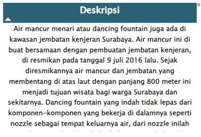

Tabel tersebut menampilkan deskripsi atau gambaran singkat dari destinasi yang dipilih pada tabel Rekomendasi Destinasi Wisata.

Tabel tersebut menampilkan nama-nama destinasi wisata yang diurutkan dari rating yang tertinggi berdasarkan filter kota dan/ataupun kategori yang dipilih.

Map tersebut menampilkan letak geografis dari semua destinasi wisata dan akan menyesuaikan dengan filter ataupun nama destinasi yang dipilih pada tabel Rekomendasi Destinasi Wisata.